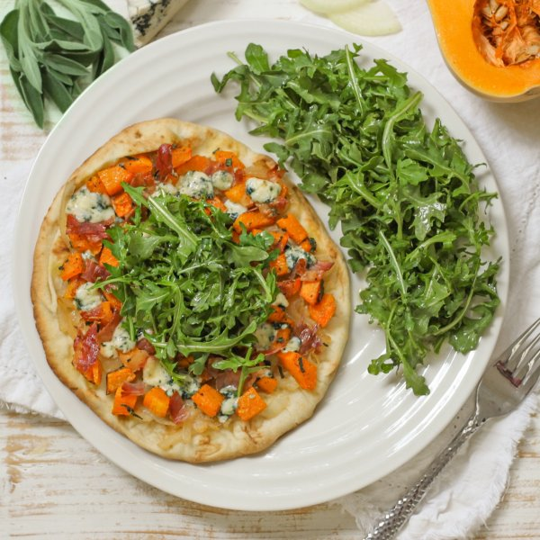

Butternut Squash, Prosciutto & Blue Cheese Flatbread with Arugula

Total Time
35 min
Nutrition (Per Serving)
692.3 kcalCalories
22.8 gProtein
74.3 gCarbs
35.4 gFat
Full nutrition table
| Calories | 692.3 kcal |
| Total fat | 35.4 g |
| Saturated fat | 16.3 g |
| Trans fat | 0.7 g |
| Cholesterol | 68.4 mg |
| Sodium | 705.1 mg |
| Carbohydrates | 74.3 g |
| Fiber | 8.1 g |
| Sugars | 8.8 g |
| Protein | 22.8 g |
| Potassium | 770.8 mg |
| Calcium | 379.1 mg |
| Iron | 5.6 mg |
| Vitamin A | 798.7 IU |
| Vitamin C | 26.5 mg |
| Vitamin D | 15.5 IU |
Cookware
Ingredients
- 1 (5 oz) pkgbaby arugula
- 1 smallbutternut squash
- 1 (4 oz) pkgcrumbled blue cheese
- 4flatbreads or naan
- ½ small pkgfresh sage
- 4 slicesprosciutto
- 1 mediumyellow onion
- black pepper
- extra virgin olive oil
- honey
- red wine vinegar
- salt
Steps
- Preheat oven to 450°F. Line a large baking sheet pan with aluminum foil and set aside.
- Wash and dry the fresh produce. (Skip the arugula if it came pre-washed.)½ small pkg fresh sage
1 small butternut squash
1 (5 oz) pkg baby arugula - Pick sage leaves off the stems; discard stems and finely chop the leaves. Place in a medium bowl.
- Trim and peel squash; halve lengthwise, scrape out the seeds, and small dice. Add to the bowl with the sage along with oil, salt, and pepper; stir to coat. Transfer squash to the baking sheet and spread out in a single layer. (Reserve bowl for later use.)1 tbsp extra virgin olive oil
½ tsp salt
½ tsp black pepper - Place baking sheet in the oven (it doesn't have to be fully heated) and roast, stirring halfway through, until squash is golden and fork-tender, 15-18 minutes. Remove from oven.
- Meanwhile, preheat a large skillet over medium-high heat.
- While the skillet heats up, peel, halve, and thinly slice onion into half-moons.1 medium yellow onion
- Once the skillet is hot, add prosciutto slices and cook until crispy, about 1 minute per side. Remove to a paper towel-lined plate and set aside.4 slices prosciutto
- Return skillet to medium heat, add oil, and swirl to coat the bottom; add onion, water, and salt. Cook, stirring frequently, until onions are soft and golden brown, about 8 minutes. Remove from heat.2 tsp extra virgin olive oil
2 tbsp water
¼ tsp salt - Meanwhile, place oil, vinegar, honey, salt, and pepper in the reserved bowl; whisk to combine the dressing and set aside.4 tsp extra virgin olive oil
1 tbsp red wine vinegar
1 tsp honey
¼ tsp salt
¼ tsp black pepper - Crumble or chop the crispy prosciutto into bite-sized pieces.
- Carefully remove cooked squash from the baking sheet by lifting the corners of the foil and transferring the whole sheet to a flat surface.
- Arrange flatbreads on the baking sheet; layer with onion, squash, prosciutto, and blue cheese. Place in the oven and bake until flatbreads are golden and cheese is melted, about 5 minutes.4 flatbreads or naan
1 (4 oz) pkg crumbled blue cheese - Meanwhile, add arugula to the bowl with the dressing and toss to combine.
- When the flatbreads are done, remove from oven, and top each with a small handful of arugula. (Reserve remaining arugula for serving.)
- Divide flatbreads between plates; serve with remaining arugula on the side and enjoy!